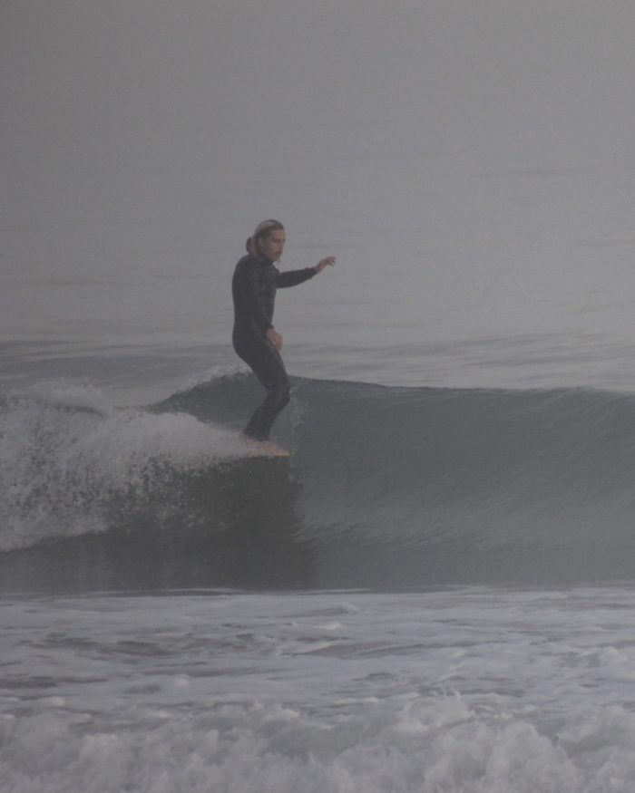
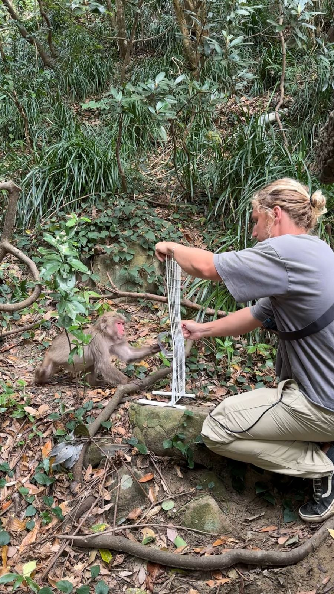
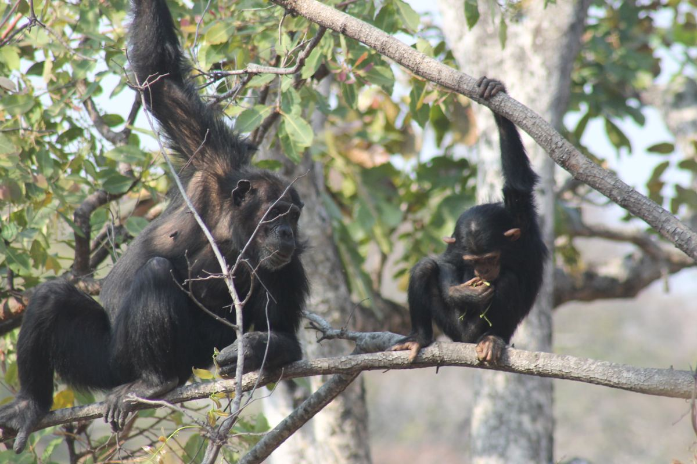
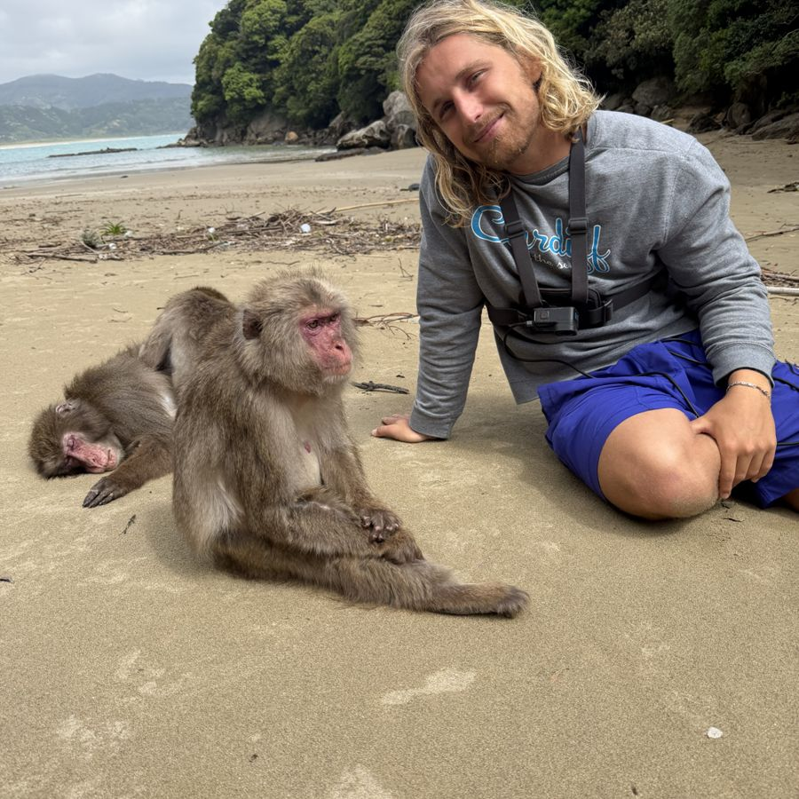
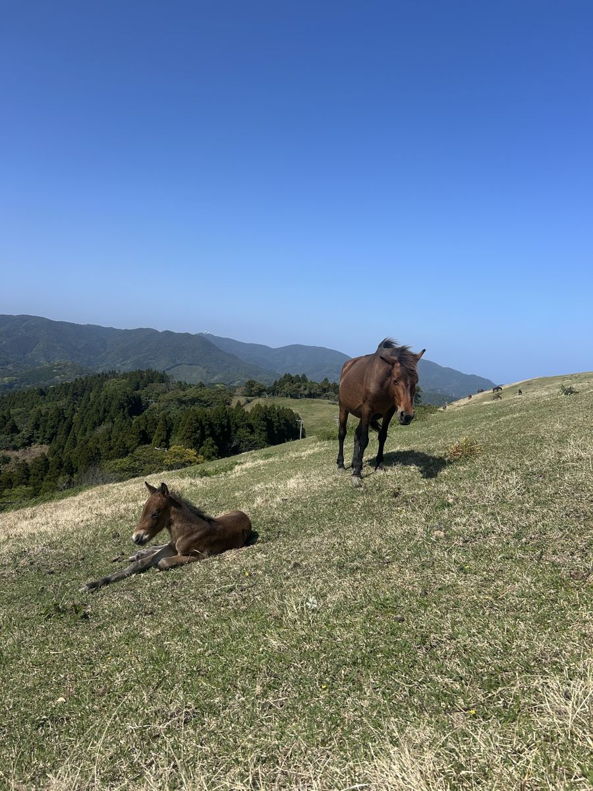
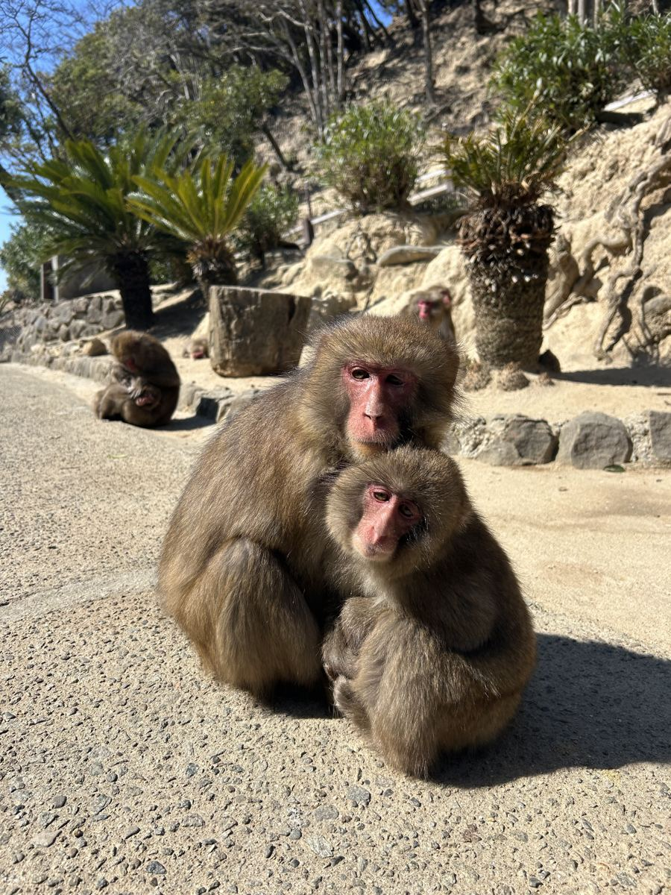
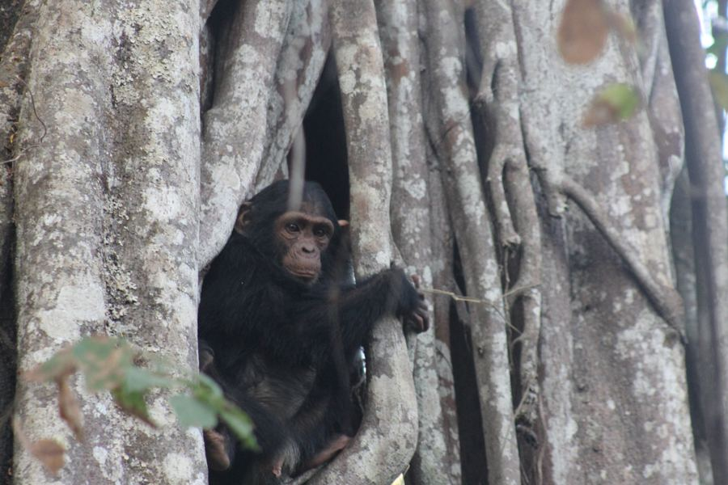

Mirrors & self-directed behaviour
GibraltarHow Barbary macaques explore and use mirrors and reflective surfaces. The core project of my PhD.
Primate behaviour, cognition and the evolutionary roots of mental health.
I'm a PhD student in Biological Anthropology at the University of Cambridge.
My interest in mental health started long before primatology. I grew up working in community mental health, including on an Assertive Community Treatment Team (ACTT), which supports people living with serious mental illness in their homes and communities. That work showed me how much relationships, stress and isolation shape a person's wellbeing, and those questions have followed me into the field.
Since then I've studied chimpanzees in western Tanzania, baboons in Namibia and macaques in Japan and Gibraltar, looking at how other primates form bonds, regulate their behaviour and cope with social life.
I hold an MSc in Human Evolution and Behaviour from UCL (Distinction) and a BSc from UNC Chapel Hill, where I studied biology, psychology and chemistry. I've also worked as an EMT and as head surf instructor at a surf school back home in Carolina Beach, North Carolina, where I developed therapy surf lessons for ACTT patients.

How Barbary macaques explore and use mirrors and reflective surfaces. The core project of my PhD.

A multi-site replication of the cylinder task with Japanese macaques, testing how self-control varies with sex and dominance rank.
 Photo: Bernard Dupont, CC BY-SA 2.0
Photo: Bernard Dupont, CC BY-SA 2.0Whether grooming of vulnerable body regions reflects the strength of the bond between partners, using video of 199 grooming bouts across 42 pairs of wild chacma baboons at Tsaobis Nature Park.

Focus groups with UK psychiatrists on how evolutionary frameworks are used in clinical practice, alongside comparative work on adolescence, cultural transmission and social isolation.
Mirror and cognition research for my PhD, University of Cambridge.

Cognition experiments with the Wildlife Research Center, Kyoto University.

Drone-based observation of horse social groups with Kyoto University.

Field training for Kyoto University at the Awajishima Monkey Center.
Photo: B. Dupont, CC BY-SA 2.0Grooming, trust and social bonds in a wild desert population.

Fieldwork with wild chimpanzees during my MSc, including an independent project on nest orientation and wind.


Do baboons let their closest partners groom the most vulnerable parts of their bodies? Across 199 grooming bouts from 42 pairs at Tsaobis, bond strength didn't predict access to vulnerable areas, and neither did kinship or rank. The pattern was strongly skewed, though: half of pairs never groomed these regions while a few devoted most of their grooming to them.
Focus groups with fifteen UK psychiatrists on using evolutionary explanations in the clinic. Psychiatrists reported benefits such as reduced self-stigma and better engagement, and positive responses from patients and families, but also real barriers at the patient, clinician and service level.
Do chimpanzees orient their nests away from the wind? Across 178 nests at Issa Valley, Tanzania, fresh nests showed no consistent relationship with daily wind direction and older nests faced every which way, suggesting tree structure, terrain and social factors matter more than wind for nest orientation.